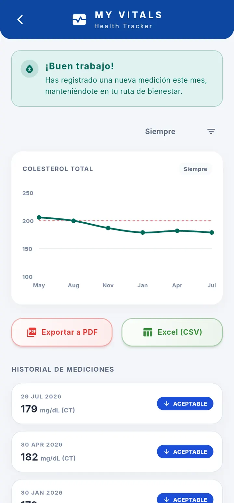
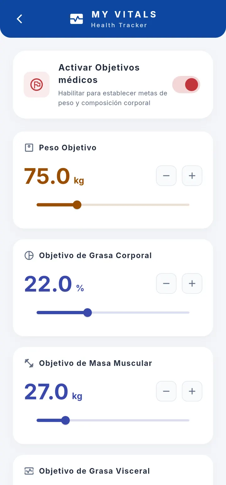
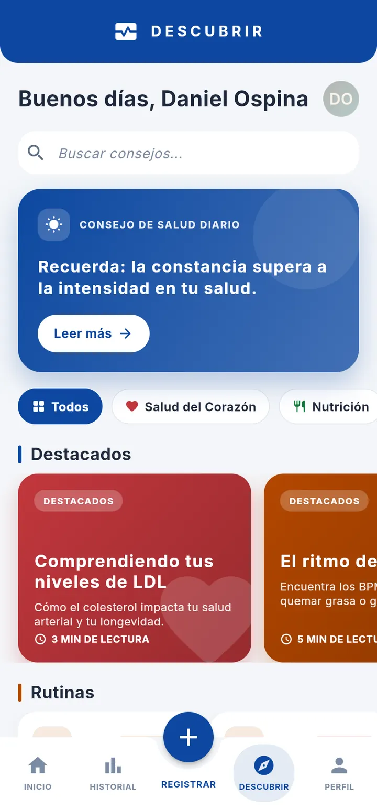

inicio/proyectos/Health Tracker/prensa
// press kit · health-tracker
Prensa — Health Tracker
Todo lo que necesitas para escribir sobre Health Tracker: descripciones listas para copiar, ficha técnica, capturas en alta y contacto directo. Puedes usar este material libremente en artículos, reseñas y publicaciones sobre la aplicación.
Descripciones
Tres versiones, según el espacio del que dispongas. Se pueden usar tal cual.
Una línea
Tus indicadores de salud, interpretados contra rangos clínicos reales.
Párrafo corto
Health Tracker registra signos vitales, antropometría, perfil lipídico y composición corporal, y contrasta cada valor con bandas clínicas resueltas por dispositivo de medición, sexo y edad. Funciona sin conexión y exporta a PDF y CSV.
Descripción completa
La mayoría de aplicaciones de salud guardan números; Health Tracker los interpreta. Cada medición se contrasta con rangos clínicos administrados en servidor —no con una tabla genérica— y se presenta con un semáforo de estado, porque un perfil lipídico debe leerse con los cortes del laboratorio donde se tomó el examen. Todo se guarda en el dispositivo y la aplicación es plenamente usable sin red; la sincronización solo marca un registro como sincronizado si el servidor confirma, de modo que un fallo de conexión nunca pierde datos. Incluye historiales con gráficas y bandas de referencia, exportación a PDF y CSV, copia de seguridad completa, bloqueo biométrico opcional y cinco idiomas.
Ficha técnica
| Nombre | My Vitals |
|---|---|
| Desarrollador | Iron-Coding — [RAZÓN SOCIAL] |
| Categoría | Salud y forma física |
| Plataformas | Android y web ejercitados; iOS, Linux, macOS y Windows compilables. |
| Idiomas | Español, inglés, portugués, italiano y alemán |
| Precio | [POR DEFINIR] |
| Estado | Versión 0.1.0 · Fase 0. Funcionalmente completa de punta a punta; quedan por sustituir los andamios de autenticación. |
| Fecha de lanzamiento | [POR DEFINIR] |
| Sitio | iron-coding.art/proyectos/health-tracker/ |
Capturas
En formato WebP, 720 px de ancho. Si necesitas otra resolución u otro formato, pídenoslas y te las mandamos.
{kind=link}

{kind=link}

{kind=link}

{kind=link}
Marca
El logotipo es la etiqueta autocontenida <Iron-Coding/> y debe usarse
siempre completa, sin recortar los signos ni alterar sus colores.
- Isotipo en SVG — vectorial, escala sin perder calidad.
- Icono en PNG — 180 × 180 px.
- Imagen de portada — 1200 × 630 px.
{kind=link}
{kind=link}
{kind=link}
Colores de marca: negro de forja #0A0A0C, rojo #C1272D,
violeta #8B5CF6 y blanco cálido #F2F0EC.
Contacto de prensa
- Correo
- prensa@iron-coding.art
- Tiempo de respuesta
- Menos de dos días hábiles
- Idiomas
- Español e inglés
¿Necesitas una entrevista, una versión de prueba anticipada o material que no esté aquí? Escríbenos y lo preparamos.